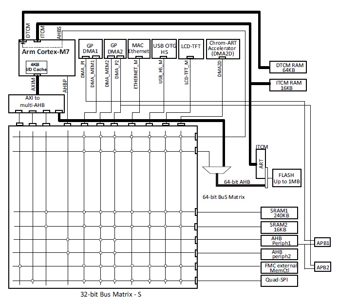
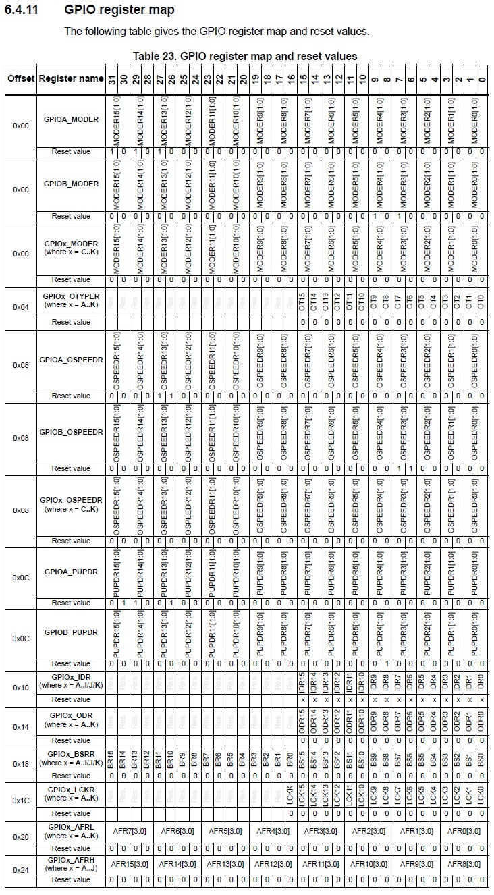

Comme à son habitude, apprendre une nouvelle notion dans le monde des microcontrôleurs nécessite d'en découvrir au moins deux de plus. Comme vous vous en doutez, l'adressage ne fait pas exception à la règle. Et d'ailleurs, avant de continuer, commençons par définir ce qu'est l'adressage :
Pour ceux qui ne comprennent pas ou qui débute la programmation, la notion d'adressage n'est pas forcément intuitive. Cependant, on peut faire une analogie simple en comparant l'adressage d'un MCU avec le processus de distribution du courier. En effet, là ou un facteur doit connaitre l'adresse de votre domicile pour vous délivrer un courier, un MCU doit connaitre l'adresse de ces constituants pour communiquer avec eux. En outre, là ou un facteur utilisera une route pour vous livrer, un MCU utilisera un bus de communication. Vous voyez, c'est quasiment la même chose ^^ 🎆 Yeah ! Meilleur analogie de l'année 2024 🎆 !
Allez, la notion d'adressage étant clarifiée, découvrons comment la mémoire de notre composant est organisée.
Dans le chapitre précédent dédié à l'architecture du MCU, nous avons vu qu'un MCU était constitué de plusieurs mémoires et d'un ensemble de périphériques. Nous avons vu ensuite que ces éléments étaient reliés au CPU par des bus de communication et que des accès mémoires pouvaient être réalisés pour récupérer des informations :

C'est bon, ça vous revient ? Parfait ! Je vais maintenant vous présentez la figure allant de paire avec celle-ci. Mes chères lecteurs, voici la cartographie mémoire des processeurs STM32F74x et STM32F75x (âmes sensibles s'abstenir 🫣) :
Commençons dès à présent à l'expliquer. Celle-ci se lit de gauche à droite. La colonne de gauche montre que notre MCU possède un espace adressable de 4GB décomposé en 8 sections de taille 512MB. L'espac ...
❔
Non mais attend un peu ! Nous on débute. Aurais-tu l'obligeance de nous expliquer ce qu'est un espace adressable ?
💬
Avec plaisir 😊. En fait, un espace adressable correspond à la capacité mémoire que peut adresser notre CPU. Par exemple, un espace adressable de 32bits indique que 32 lignes d'adresse sont utilisées. Un total de 4GB peut donc être adressé (2^32 octets).
❔
Attends, je suis pas sûr d'avoir compris. Un adressage 32bits veut dire que notre microcontroleur peut adresser jusqu'à 4GB de mémoire sans pour autant en être équipé ?
Exactement. Un espace adressable de 32bits indique juste que notre MCU a la capacité d'adresser 4GB de mémoire. En pratique, seul une portion de l'espace adressable est implémenté par les mémoires et les périphériques. Le reste de l'espace est laissé inutilisé.
Allez, ceci étant dit, continuons d'analyser notre figure. Mais où est-ce qu'on s'était arrêté déjà 🤔 ? Ah oui ! Ca me revient. Je disais donc que l'espace adressable était décomposé en 8 sections de même taille ^^. D'ailleurs, on observe que :
D'ailleurs, on observe que . La troisième section (bloc 2) contient les périphériques des domaines APB1, APB2, AHB1 et AHB2. Les sections 4 à 7 (bloc 3 à 6) contiennent les périphériques du domaine AHB3 (FMC) et la dernière section (bloc 7) contient les registres internes du CPU.
❔
Ok, on comprends mieux. Par contre, l'espace adressable n'a rien à voir avec les notions de microcontrôleur 8bits, 16bits ou 32 bits ?
Bonne question. Ces deux notions sont différentes et il ne faut pas les confondre. Lorsque l'on parle de microcontrôleur 8bits, 16bits ou 32bits, on désigne en fait la largeur du bus de données et non pas la largeur du bus d'adresse.
Un microcontrôleur 8bits travaillera avec un bus de données de taille 8bits (lignes D0 à D7), un microcontrôleur 16bits avec un bus de taille 16 bits (lignes D0 à D15) et un microcontrôleur 32bits avec un bus de taille 32bits (lignes D0 à D31).
Notez cependant que l'espace adressable d'un microcontrôleur est décoléré de la largeur du bus de données. En effet, un microcontroleur 8bits n'est pas limité à 256 octets d'adresse mais possède en pratique toujours quelques kilo-octets de mémoire. C'est d'ailleurs un bon moyen mémo-technique pour s'en rappeler.
Enfin pour terminer cet aparté, utiliser un bus de taille restreinte (8bits par exemple) ne veut pas dire qu'il est impossible de travailler avec des données de taille supérieur (16bits ou 32bits par exemple). En fait, cela dépend entiérement du jeu d'instructions. En général, le traitement de données 16bits ou 32bits sur un microcontrôleur 8bits sera juste plus long. En effet, là ou un microcontroleur 32bits aurait fetcher un mot de 4 octets en un cylce avec une seule instruction, un microcontroleur 8bits le récupérera en plusieurs cyles avec une ou plusieurs instructions.
Par ailleurs, contrairement aux registres précédents, le registre IDR est en lecture seul, une écriture dans ce registre sera toujours sans effet.
Si la lecture des paragraphes précédent était votre première expérience avec les registres, je vous conseille de continuer à vous exercer.
Regarder dans un premier
Dans un premier temps, je vous conseil de vous exercer avec le périphérique GPIO.
Bon, cet apparté étant terminé, j'aimerais résumer les notions importantes déjà vue jusqu'à présent nous allons pouvoir passer directement au prochain paragraphe dédié à l'adresse de nos chères registres.
De nos jours, chaque fabriquant propose des générateurs de code permettant de d'initialiser tous le bas niveau du microcontrôleur et de ce fait de s'abstenir d'utiliser les registres. Ceux-ci est une très bonne chose pour les débutants souhaitant s'initier à la programmation sur microcontrôleur et pour les personnes souhaitant déployer rapidement un applicatif. Cependant, pour des profesionnels qui réalisant des projets complexes mélant beaucoup de bibliothèques tièrces dont le code n'est pas maitrisé, l'utilisation de ces générateurs peut vite s'avérer laborieuse. Les problèmes s'accumulent et les bugs apparaissent. C'est pourquoi, il est si important de comprendre comment fonctionne un microcontrôleur et dans notre cas comprendre comment fonctionne les périphériques et leurs registres.

Cette table liste l'ensemble des registres du périphérique. On discerne les registres GPIOx_MODER , GPIOx_OTYPER GPIOx_OSPEEDR , GPIOx_PUPDR , GPIOx_IDR
Cette figure est intéressante car, en l'étudiant, nous pouvons distinguer plusieurs caractéristiques propres aux périphériques et aux registres d'un MCU.
Ⅰ.
Dans un microcontrôleur, un périphérique peut être dupliqué en plusieurs exemplaires.
Par exemple, dans le STM32F746, en fonction du modèle de puce utilisé, on peut retrouver jusqu'à 11 périphériques GPIO dupliqués à l'identique. Le registre GPIOA_MODER est associé au port A, le registre GPIOB_MODER est associé au port B et ainsi de suite jusqu'au périphérique GPIOK.
Ⅱ.
Chaque périphérique et chaque registre possède une adresse mémoire.
Ici, la position du registre est exprimée en terme d'offset par rapport à l'adresse de base du périphérique. Dans notre cas, on remarque un offset nul (0x00), l'adresse du registre est donc égale à celle du périphérique.
Ⅲ.
Chaque registre possède une taille. Elle est généralement exprimée en bits.
En outre, celle-ci est généralement égale à la taille du bus d'adresse mais des exceptions peuvent exister. Dans notre exemple, la taille du registre est 32bits et celui-ci possède 16 champs, un pour chaque broche GPIO du port A. Chaque champ du registre est accessible en lecture et en écriture (rw).
Ⅳ.
Suite au reset, chaque registre possède une valeur d'initialisation.
La figure nous montre que suite à un reset du microcontrôleur, une fonction alternative est mappée sur les broches PA15, PA14, PB4 et PB3 (0b10) alors que les autres broches sont configurées en entrée (0b00).
Aujourd'hui, nous allons donc parler de périphériques et de registres. Pas les notions les plus passionnantes du monde me diriez-vous ? Et effectivement, je n'en dirais pas moins. Cependant, l'intérêt des registres ne réside pas dans leur utilisation qui est, je l'admets fastidieuse et ennuyeuse la plupart du temps. Non, l'étude des registres permet surtout de mieux appréhender le fonctionnement interne des microcontrôleurs et comme il est toujours mieux de comprendre comment les choses marche, j'ai décidé de consacrer un chapitre entier à l'étude de ces petits espaces mémoire.
Dans la situation où vous vous questionnez sur comment ceux-ci fonctionnés ? C
J'ai donc décidé de consacrer un chapitre entier à l'étude de ces petits espaces mémoire que sont les registres. Allez, z'est parti ⚡️👊!!!
Et à la fin de celui-ci, j'espère bien que vous aurez tous le savoir nécessaires pour concevoir des périphériques électroniques sur-mesure. Vous serez en mesure de les interfacer correctement avec vos MCU favoris et vous serez peut être même acclamer par vos collègues lors de vos présentations techniques (garanti à 100% 👌).
Mais bon, commençons d'abord par le commençement en se demandant ce qu'est un registre et à quoi ça sert ?
vos cartes électroniques d'une manière qui vous semblera au début, pas très orthodoxe . Nul doute que pendant votre cursus, vous avez déjà appris à les utiliser, qu'il n'ont plus de secret pour vous ou que sais-je encore. Comment pouvez-vous me laisser une chance de vous en apprendre plus.
💬
En programmation, l'adressage est un procédé qui consiste à assigner une adresse ou une plage d'adresse physique à une mémoire ou à un périphérique. Ces adresses correspondent à des numéros uniques et sont non modifiables. Elles sont choisies lors de la conception de la puce.